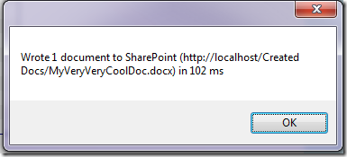

A long time ago, I wrote Part 1 of this post, based on the presentation I did at the 2010 SharePoint Conference in Sydney. If you're following along with the code, you may want to review that post so you can set up your development environment to match mine.
To quickly recap, the last post showed how to create Word (OpenXML, docx) documents programmatically and write them to disk using the OpenXML SDK (and therefore without the requirement for Word/Office on the machine creating the documents).
In this part, I'll extend the solution to write the documents to a document library in SharePoint and then use Word Automation Services to automatically convert the docx files to PDF format.
Setup
To follow along with this walkthrough without changes, setup your SharePoint instance (at http://localhost) as follows:
- Create a document library called "Created Docs" in the root site
- Create a document library called "Converted Docs" in the root site
If you use a remote server, and/or a different site or library names, you'll need to adjust some of the URI and path strings in the code below to make it work.
Writing to a SharePoint Library
Carrying on from last time, wire up the click event of the CreateOneSharePointDocumentButton:
- private void CreateOneDocumentOnSharePointButton_Click(object sender, EventArgs e)
- {
- gen.CreateOneDocumentOnSharePoint();
- }
Generate a stub for the CreateOneDocumentOnSharePoint() method in the DocGenerator class using the Ctrl+. technique made possible by the Visual Studio 2010 Productivity Power Tools.
Switch to and add a using statement to the DocGenerator class to give you access to the SharePoint Client Libraries - giving it an alias will help disambiguate the File class later:
- using SPC = Microsoft.SharePoint.Client;
Using the SharePoint Client Libraries, it's very easy to write documents to a document library, and there's no need to write a document to a local drive. This means we'll use a different overload of the OpenXML SDK's WordprocessingDocument.Create() method that writes, not to a file, but to a MemoryStream.
- internal void CreateOneDocumentOnSharePoint()
- {
- SPC.ClientContext clientContext = new SPC.ClientContext("http://localhost");
- string fileUrl = "/Created Docs/MyVeryVeryCoolDoc.docx";
- sw.Reset();
- sw.Start();
- using (MemoryStream ms = gen.CreatePackage())
- {
- ms.Seek(0, SeekOrigin.Begin);
- SPC.File.SaveBinaryDirect(clientContext, fileUrl, ms, true);
- }
In this code, you create a new SharePoint.Client.ClientContext that gives access to the site (in this case at http://localhost, but if you've got things set up differently, change it here).
Create an overload of the CreatePackage() method in the DocumentCreator class that creates and populates a MemoryStream:
- internal MemoryStream CreatePackage()
- {
- MemoryStream ms = new MemoryStream();
- using (WordprocessingDocument package =
- WordprocessingDocument.Create
- (ms, WordprocessingDocumentType.Document))
- {
- CreateParts(package);
- }
- return ms;
- }
Move the pointer to the start of the MemoryStream and call the File.SaveBinaryDirect() method passing in the ClientContext, a string indicating where the file should be written, the stream and a boolean that tells SharePoint whether or not to overwrite an existing file with the same name.
Running the app and clicking the One document in SharePoint button shows that it's very fast - in my case 102ms

Writing lots of documents is fast too - add an event handler to the CreateOneSharePointDocumentButton:
- private void CreateManyDocumentsOnSharePointButton_Click(object sender, EventArgs e)
- {
- gen.CreateManyDocumentsOnSharePointInParallel((int)NumberOfDocumentsToCreate.Value);
- }
And add a CreateManyDocumentsOnSharePointInParallel() method that uses a Parallel.For() loop to call CreatePackage() and File.SaveBinaryDirect() for as many files as you create:
- internal void CreateManyDocumentsOnSharePointInParallel(int NumberOfDocs)
- {
- SPC.ClientContext clientContext = new SPC.ClientContext("http://localhost");
- string fileUrl = "/Created Docs/MyEvenCoolerDoc{0:D5}.docx";
- sw.Reset();
- sw.Start();
- Parallel.For(0, NumberOfDocs, i =>
- {
- using (MemoryStream ms = gen.CreatePackage())
- {
- ms.Seek(0, SeekOrigin.Begin);
- SPC.File.SaveBinaryDirect(clientContext, string.Format(fileUrl, i), ms, true);
- }
- });
- sw.Stop();
- System.Windows.Forms.MessageBox.Show(string.Format(
- "Wrote {3} documents to SharePoint ({1}{2}) in {0} ms (using parallel processing)",
- sw.ElapsedMilliseconds,
- clientContext.Url,
- fileUrl,
- NumberOfDocs));
- }
This is also pretty fast - in my case 40ms per document.
Navigating to the document library shows all those documents sitting just where you'd expect to see them:

Converting Word Documents to a Fixed Format (PDF or XPS)
Up until now, we've not had to use Word (or any other Office client) as all we've been doing is generating documents, not rendering them. Just like you can create an HTML document without requiring a browser, it's perfectly valid to create a Word document (or any other OpenXML format document) without using Word.
However, to view the document, or to create a fixed version of it like PDF or XPS, it's necessary to render it. Up until the release of SharePoint 2010, the highest fidelity way to do this was to open the document in Word. Of course, doing that on the server was fraught with difficulty. Word is not designed to be a server-side tool - it throws (sometimes modal) dialogs, it spends a lot of resources on updating the screen and it's not optimised for multi-processor, large memory scenarios. When there is a user interacting with Word though, the bottleneck is rarely the computer.
The SharePoint team addressed this problem with the Word Automation Services feature in SharePoint 2010 (standard edition and higher). Word Automation Services is the client code from Word with the UI bits stripped out and optimised to run as a server process. All of the rendering engine is available for SharePoint to use without any of the issues (both technical and from a licensing point of view) of using Word on a server. There's lots of great info on Word Automation Services on MSDN and elsewhere. Here's the list of resources I provided in the first post in this series:
- Developing with SharePoint 2010 Word Automation Services
- Introducing Word Automation Services
- Word Automation Services: What It Does
- Programming Word Automation Services
- Building Document Generation Systems from Templates using Word 2007 and Word 2010
Word Automation Services (WAS) document conversion jobs run as as an asynchronous server-side job that can either be scheduled automatically (for example, when a document is placed in a folder) or programmatically. Either way, the job won't start immediately, just the next time the WAS scheduler runs. The frequency of the scheduler running is set in Central Administration - see the links above for details on how to set it up. I set it to the minimum interval - one minute.
Interacting programmatically with the service is pretty straightforward, but there are two gotchas:
- the .NET libraries are 3.5 only, so the project you create must be a .NET 3.5 project, and
- the calls will fail (with cryptic exceptions) if it's not a 64-bit call, so you must target either x64 or Any processor type, not x86.
Create a new console application and make sure that the target framework is 3.5.
Open the Visual Studio Configuration Manager dialog by dropping down the Solution Configurations drop-down on the Visual Studio Standard toolbar (or choosing Configuration Manager from the Build menu):
Next, add a Solution Platform:
{kind=link}
to target Any CPU (or x64)
{kind=link}
Now you're ready to start building.
Converting a single document to PDF
Add references to the Microsoft.SharePoint and Microsoft.Office.Word.Server assemblies.
Add using statements for those assemblies:
- using Microsoft.SharePoint;
- using Microsoft.Office.Word.Server.Conversions;
Add a couple of static string properties to the class that you can adjust to suit the way you've got your SharePoint setup configured:
- // If you manually installed Word Automation Services, then replace the name
- // in the following line with the name that you assigned to the service when
- // you installed it.
- static string cWordServicesName = "Word Automation Services";
- static string siteUrl = "http://localhost";
Now you can initiate the conversion of a single document:
- private static void SingleConv()
- {
- using (SPSite spSite = new SPSite(siteUrl))
- {
- ConversionJob job = new ConversionJob(cWordServicesName);
- job.UserToken = spSite.UserToken;
- job.Settings.UpdateFields = true;
- job.Settings.OutputFormat = SaveFormat.PDF;
- job.AddFile(siteUrl + "/Created%20Docs/MyAwesomeDoc.docx",
- siteUrl + "/Converted%20Docs/MyAwesomeDoc.pdf");
- job.Start();
- Console.WriteLine("Job ID: {0} started", job.JobId);
- Console.WriteLine("Press the any key ...");
- Console.ReadKey();
- }
- }
There are a few things to note here.
Firstly, you get a reference to the Site using the SharePoint libraries, not the SharePoint Client libraries that we used to write the Word docs to the list in the first place.
Next, you need to pass a user token to the new ConversionJob, and you get that from the SPSite user token.
Third, you specify the output format using the SaveFormat enumeration.
Finally, remember the service is performed asynchronously and so although you get a Job ID back, you don't get any more information about the job status (more on that when we do bulk conversions)
Converting documents to PDF en-masse
Converting whole libraries at once is also very easy. The ConversionJob class has an AddLibrary() method that takes as parameters a source and destination SPList object.
- private static void BulkConv()
- {
- using (SPSite spSite = new SPSite(siteUrl))
- {
- Console.WriteLine("Starting conversion job");
- ConversionJob job = new ConversionJob(cWordServicesName);
- job.UserToken = spSite.UserToken;
- job.Settings.UpdateFields = true;
- job.Settings.OutputFormat = SaveFormat.PDF;
- job.Settings.OutputSaveBehavior = SaveBehavior.AlwaysOverwrite;
- SPList listToConvert = spSite.RootWeb.Lists["Created Docs"];
- SPList listToPopulate = spSite.RootWeb.Lists["Converted Docs"];
- job.AddLibrary(listToConvert, listToPopulate);
- job.Start();
- Console.WriteLine("Bulk conversion job {0} started", job.JobId);
- ConversionJobStatus status = new ConversionJobStatus(cWordServicesName,
- job.JobId, null);
- Console.WriteLine("Number of documents in conversion job: {0}", status.Count);
- while (true)
- {
- System.Threading.Thread.Sleep(5000);
- status.Refresh();
- if (status.Count == status.Succeeded + status.Failed)
- {
- Console.WriteLine("{2} Completed, Successful: {0}, Failed: {1}",
- status.Succeeded, status.Failed, DateTime.Now);
- break;
- }
- Console.WriteLine("{2} In progress, Successful: {0}, Failed: {1}",
- status.Succeeded, status.Failed, DateTime.Now);
- }
- Console.ReadKey();
- }
- }
Checking the status of the job is straightforward (as long as you have the JobId - a GUID uniquely identifying this conversion job). The ConversionJobStatus object holds information about the conversion job including how many documents are to be converted, how many have been converted successfully and how many have failed. Calling the Refresh() method gets the most up-to-date status and you can use that to poll for completion. Remember that jobs only start every <n> minutes, where n is a setting in SharePoint Central Administration
The result is a SharePoint list full of PDF files, created without ever needing to open Word.
Conclusion
The combination of the OpenXML SDK and Word Automation Services makes server-side document creation simple, scalable and efficient. This is definitely a tool worth adding to your arsenal.
Source Code
I've zipped up the two solutions - the document creation (.NET 4.0) WinForms project and the document conversion (.NET3.5) project for you to download and play with. Notice that they are NOT production ready - they're illustrative only. Use them at your peril, your mileage may vary, contents may be hot no guarantees etc … you know the drill.
Document Creation Solution Download (241kB)
Document Conversion Solution Download (115kB)